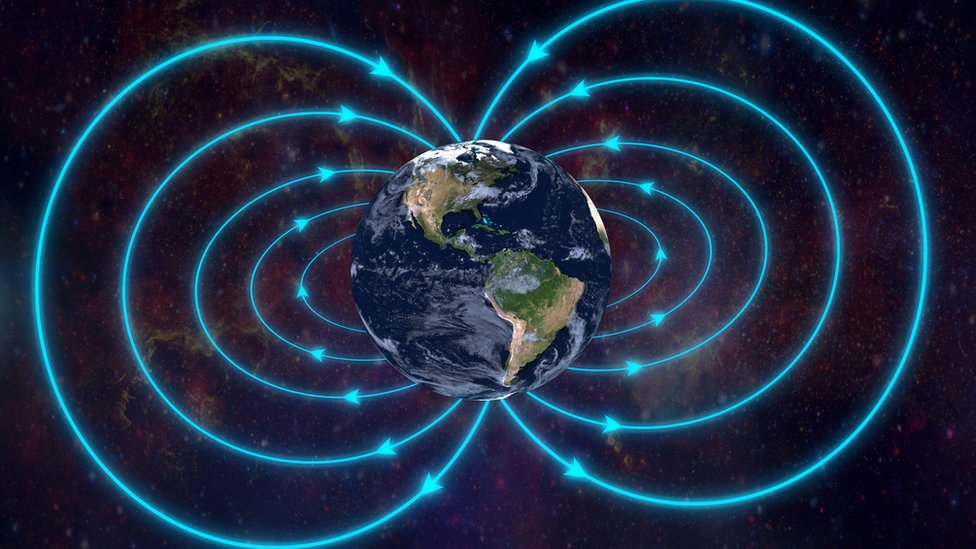
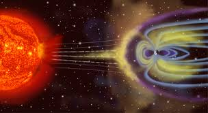
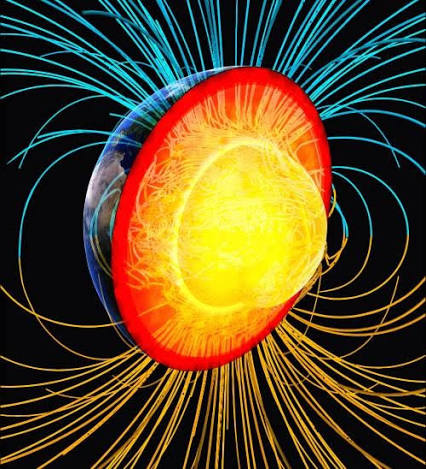
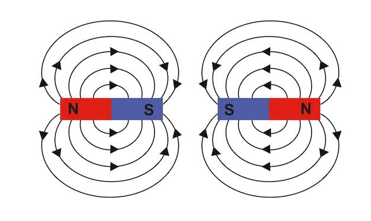
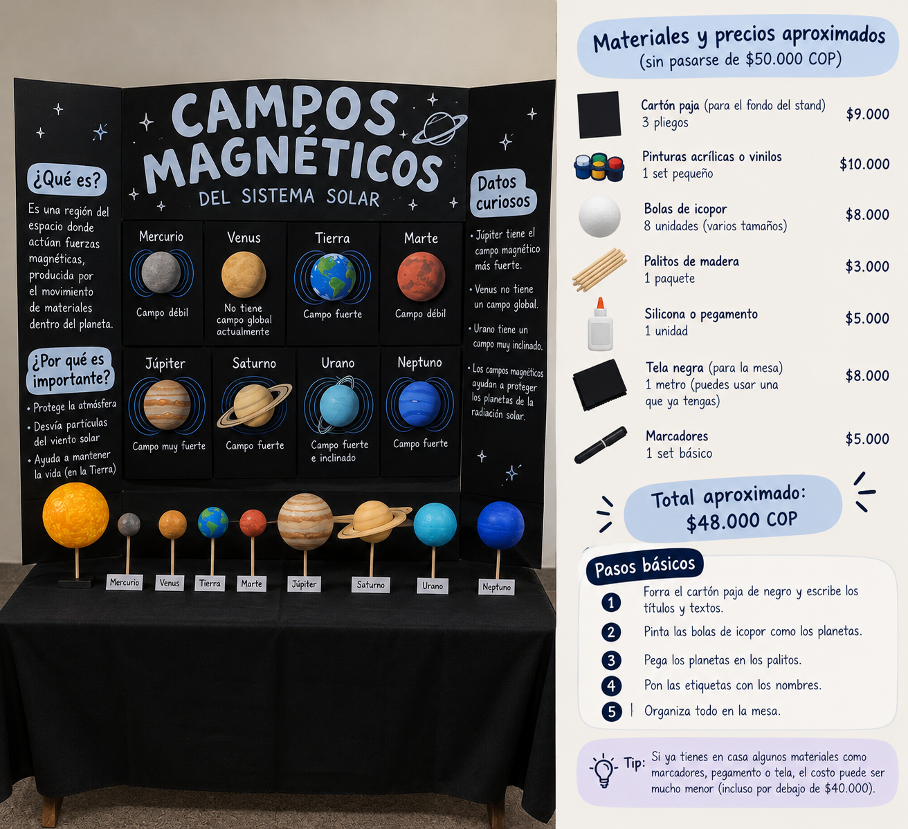

“El Sistema Solar: un universo de mundos unidos por invisibles campos magnéticos que protegen, conectan y dan forma a sus planetas.”
“El campo magnético es una fuerza invisible que rodea ciertos cuerpos y puede atraer, repeler o proteger frente a partículas cargadas.”
Entender los campos magnéticos planetarios sirve para conocer cómo se protegen los planetas del viento solar y comprender mejor su interior, atmósfera y evolución.
El visitante encontrará información breve y clara sobre los campos magnéticos de los planetas del sistema solar, su importancia y cómo protegen a los planetas.
Comprender los campos magnéticos planetarios para conocer su importancia en el sistema solar.
1. Campo magnético planetario
Es la región de influencia magnética que rodea a un planeta y que se origina por diferentes procesos internos o externos. Puede representarse mediante líneas de campo que indican su dirección.

2. Magnetosfera
Es la región del espacio alrededor de un planeta donde su campo magnético influye de manera importante en el movimiento de las partículas cargadas. Puede protegerlo parcialmente del viento solar.

3. Efecto dínamo
Es el proceso mediante el cual el movimiento de materiales conductores de electricidad dentro de un planeta genera un campo magnético. Es fundamental para explicar el campo terrestre.

4. Polos magnéticos
Son las regiones donde las líneas del campo magnético entran o salen del planeta. No coinciden exactamente con los polos geográficos y pueden cambiar de posición.

*Protección biológica y atmosférica:
Actúa como un escudo contra el viento solar y la radiación cósmica, evitando la destrucción del ADN en las células vivas y previniendo la erosión de la atmósfera y del agua líquida.
*Orientación y navegación biológica:
Proporciona un marco de referencia electromagnético que diversas especies animales (aves, tortugas, peces) utilizan para migrar, y sirve como base fundamental para la geolocalización terrestre, marítima y aérea.
*Interacción con la tecnología humana:
Absorbe y redistribuye la energía de la actividad solar; sin embargo, durante tormentas geomagnéticas intensas, las variaciones del campo pueden inducir fallas en redes eléctricas, satélites y sistemas de telecomunicaciones.
Explora el Sol y los ocho planetas. Usa los botones o el deslizador para ver cómo es el campo magnético de cada uno.
Origen:
Intensidad:
Dato curioso:
Nuestro stand está diseñado para explicar de manera visual e interactiva los campos magnéticos planetarios del Sistema Solar. Contará con una cartelera de fondo negro, donde se presentarán los ocho planetas, sus características magnéticas, conceptos fundamentales y algunos datos curiosos.
La exposición estará distribuida en diferentes espacios:

Realizaremos un experimento utilizando un imán, una hoja de papel, limaduras de hierro y una linterna. Su propósito es demostrar visualmente cómo se distribuye un campo magnético y explicar cómo interactúa con las partículas provenientes del Sol.
Materiales necesarios:
Procedimiento:
¿Qué queremos demostrar? Las limaduras de hierro permiten visualizar el patrón de las líneas del campo magnético alrededor del imán. La linterna representará de manera simbólica el viento solar, facilitando la explicación de cómo las partículas provenientes del Sol interactúan con la magnetosfera de un planeta.
| Material | Uso | Precio aproximado |
|---|---|---|
| Pliego de cartulina | Fondo de la cartelera | $5.000 |
| Bolas de icopor (9) | Decoración de los planetas | $18.000 |
| Fomi escarchado | Representación de los planetas | $3.000 |
| Tela negra | Soporte de los planetas | $5.000 |
| Silicona o pegamento | Unión de los materiales | $5.000 |
| Marcadores | Rótulos y textos informativos | $5.000 |
Presupuesto total aproximado: $41.000 COP. Los precios pueden variar dependiendo de los materiales disponibles y de los elementos que podamos reutilizar.
El imán, las limaduras de hierro, la hoja y la linterna se consideran materiales adicionales para el experimento.